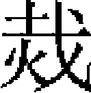

程鉅夫 袁桷
程鉅夫，名文海，避武宗御名，以字行。其先自徽州徙郢州京山，後又徙建昌。宋德祐元年，鉅夫叔父飛卿，以軍器監知建昌軍，大兵至，迎降。鉅夫入爲質子，授宣武將軍、管軍千户。世祖召見，問：「宋何以亡？」對曰：「賈似道誤之。」又問：「似道何如人？」對曰：「爲邊將一似道也，爲宰相又一似道也。」帝悦，命給筆札書之。鉅夫即御前，以銀盆磨墨，書二十餘紙以進。帝問居何官，以千户對。帝曰：「卿儒者，授非所宜。」特命改直翰林，且諭之曰：「自今政治得失，廷臣邪正，卿爲朕直言無隱。」鉅夫頓首謝。十六年，授應奉翰林文字。明年，進修撰，尋遷集賢直學士、中議大夫，兼秘書少監。
鉅夫條陳五事：
一，取會江南仕籍。
昨者欽奉聖旨，許令江南曾有官人賫告敕赴省换授，此最良之法。奸邪賣弄，遂至顛倒。求仕者憑外省之咨，而外省貪饕，尤爲不法。有賣家喪業，而卒不沾一命者。亦有全無根脚，白身而受宣敕者。又有外省官將空頭咨示，旋來内省，尋趁有錢人員，書填姓名。亦有内省通同作計，公行添插人員。又有一等奸人，置局京師，計會保官，誣寫根脚，保明而得者。吏治之弊，至此已極。省府欲行考究，似覺費力。今有捷法，可以永除病根。乞選清强通曉官員，無論南北，每省差兩員前去，同本道按察司，取會江南州縣城郭鄉村鄰甲，保明詣實元在亡宋有官人員姓名，一概置籍明書本人鄉貫、三代及入仕根脚，賫來省部，以憑照勘。遇有求仕人員，一閲而知真僞，極爲便當。仍與申飭外省，遇有求仕者，合與行下本郡，令鄉都鄉甲保明本人是何出身，即量輕重咨來，不許邀阻。其有邀阻者，許令求仕人赴御史行臺及按察司論訴。庶幾公私兩得便當。籍成之後，却與商略白身人求仕格式，行下江南。
一，通南北之選。
聖主混一車書，南北之人皆得入仕。惜乎北方之賢者，間有視江南爲孤遠，而有不屑就之意。故仕於南者，除行省、宣慰、按察諸大衙門，出自聖斷選擇而使，其餘郡縣官屬指缺願去者，半爲貪污狼藉之輩。南方之賢者，列姓名於新附，而冒不識體例之譏，故北方州縣並無南方人士。且南方歸附已七八年，是何體例難識如此？欲乞令省部，刷具南北府州縣官員脚色參對，今後南北選房，流轉定奪。若以南人爲未識體例，則乞於北方州郡每處且與參用一二人，秩滿却與通行定奪。其北人注南缺而不赴者，重與罪過。庶幾吏稱民安，可以上副聖主兼愛南北之意。
一，置考功歷。
國朝建御史臺，雖有考課之目，而未得其要，莫可致詰。欲乞照前朝體例，應諸道府州縣，下至曹掾等，各給出身印紙歷子一卷，書本人姓名、出身於前，俾各處長吏聯銜結罪保明，書其歷任月日，在任功過於後。秩滿，有司詳視而差其殿最。則人之賢否一覽而知，考核得實，庶無僥倖。
一，置貪贓籍。
國朝内有御史臺，外有行臺、按察司，其所以關防貪官汙吏者，可謂嚴矣。而貪污狼藉者，往往而是，何也？蓋其弊在於以徵贓爲急務，以按劾爲具文。故今日斥罷於東，明日擢用於西，隨仆隨起，此棄彼用。多方計置，反得美官。相師成風，愈無忌憚。欲乞省臺一體，應内外諸路官員，有以貪贓罷者，置籍稽考，不許收用。其吏人犯贓者，重置於法。内外一體照應，庶幾官吏知所警戒。
一，給江南官吏俸錢。
仕者有禄，古今定法。無禄而欲責之以廉，難矣。江南州縣官吏，自至元十七年以來，並不曾支給俸錢，直是放令推剥百姓。欲乞自今並與支給各合得官俸錢，其有貪贓者，重罪不恕，人自無詞。
奏上朝廷，皆采而行之。
二十年，加翰林集賢直學士，同領會同館事。二十三年，改集賢直學士，進少中大夫。入見，乞建國學，又請搜訪江南遺逸，御史臺、按察司宜南北人參用。帝並嘉納之。二十四年，立尚書省，拜參知政事，鉅夫固辭，又命爲御史中丞。臺臣言：「鉅夫南人，且年少。」帝怒曰：「汝未用南人，安知南人不可用？」遂拜侍御史，行御史臺事，奉詔求士於江南。初，詔書皆用蒙古字，至是特命以漢字書之。帝素聞趙孟頫、葉李名，密諭鉅夫，必致此二人。鉅夫又薦趙孟頫、余恁、萬一鶚、張伯淳、胡夢魁、曾晞顔、孔洙、曾冲子、凌時中、包鑄等二十餘人，帝皆擢置清要。入都復命，時宫門已閉，世祖聞之喜甚，不覺起立曰：「程秀才來矣。」
鉅夫奏《民間利病》七事：
一，江南買賣宜許用銅錢或零鈔。
竊維江南貧民多而用錢細，初歸附時，許用銅錢，當時每鈔一貫準銅錢四貫。自銅錢不用，每鈔一貫所直物件比歸附時不及十分之二。在前上司指揮官收銅錢有私藏者，坐以重罪，其拘收到官者必多，或民間尚有窖藏，亦難盡知。計江南銅錢，比故宋時雖或鎔廢，其到官者寧無十分之五，在民者無十分之一。若盡廢在官之錢，使民間以鈔一貫就官買錢若干，添貼使用，其有民間窖藏者，立限出首納官免罪，如限外不首，私自發掘行用，許鄰右主首諸色人捕告，驗實坐以元罪。有誣告者，亦反坐之。試行一二年，如公私果便，永遠行用。如其不便，然後再禁，公私亦無所損。如不復用銅錢，更宜增造小鈔。比來物貴，正緣小鈔稀少。如初時直三、五分物，遂增爲一錢。一物長價，百物隨之。省府分有小鈔發下，而州縣庫官不以便民爲心，往往憚勞而不領取，提調官亦置而不問。於是民日困而鈔日虚。宜令增造小鈔，分降江南各路，特便細民博易，亦利民重鈔之一端也。
一，軍人作過甚者，責其主將，仍重各路達魯花赤之權。
各路管民官與管軍官不相統一，軍卒肆凶，小民受害，管軍官不肯問，而管民官不敢問。甚則如臨江之兵揮刃以擬總府，吉州之兵奮拳以毆府官，此風何可浸長？國家置達魯花赤，本令兼管軍民。江南諸路達魯花赤固多失職，亦緣地遠軍驕，故不能制。宜特降旨，今後諸處經過屯戍軍兵，敢於民間剽奪姦汙者，本路達魯花赤即將犯人準法處斷。如漏失本人姓名，具管軍官姓名呈省，自其牌子頭至百户定罪有差。若十人以上同罪，罪其主將。庶幾每翼頭目，各務鈐束其下，不致生事，軍民相安，遠方幸甚。
一，百姓藏軍器者死，而劫盜止杖一百單七，故盜日滋，宜與藏軍器同罪。
盜之害民，劫盜爲甚。故自古立法，劫盜必死。江南比年殺人放火者，所在有之。被害之家纔行告發，巡尉吏卒名爲體覆，而被害之家及其鄰右先已騷然。及付有司，則主吏又教以轉攤平民，坐延歲月。幸而成罪，不過杖一百單七，而蔓延逮捕平人死獄中者，乃十之四五。况劫盜倖免，必圖報復，而告發之家無遺種矣。被賊劫者，誰敢告發？盜勢日張，其禍何可勝言！夫諸藏兵器者處死，况以兵器行劫，而罪乃止於杖，此何理也？故盜無所畏，黨日以多。今後强盜持軍器劫人財物，贓證明白，只以藏軍器論罪，郡府以便宜從事，並免待報。庶使凶人警畏，平民安帖，其於治勢實非小補。
一，江南和買物件及造作官船等事，不問所出地面，一切遍行合屬，處處擾害，合令揀出産地面行下。
凡物各有所出、所聚處。非其處而謾求，如緣木求魚，鑿冰求火，無益於官，徒擾百姓。如紵絲、邵緙、木錦、紅花、赤藤、桐魚、鰾膠等物，非處處皆出，家家俱有者也。而行省每遇和買，不問出産在何地面，件件都是遍行合屬。其各道宣慰司承行省文字如此，亦遍行合屬總管府，總管府又遍行合屬州縣。遂使江南百姓，因「遍行」二字，處處受害。及申到和買諸物，又行移體覆，動輒半年、一年。及上司放支價錢，官吏通同，不復給散於民，虚寫收管，粘入卷中，以備照刷，公私俱弊。欲令省家先計必合和買物件，某物出於何處，聚於何處，采之公論，置簿籍記。如在江東，止行下江東；在兩浙，止行下兩浙。量遠近，立限期，仍令本處宣慰司止行下所出、所聚去處，委廉正官一員，依時給價，於係官錢内即行放支，結保申呈。如後經手官吏作弊事發，依至元十九年聖旨條畫盜官財物罪犯追斷。
又造船一事，其弊與前略同。自至元十八年至今，打造海船、糧船、哨船，行省並不問某處有板木，某處無板木，某處近河採伐利便，又有船匠，某處在深山採伐不便，又無船匠，但概驗各道户口，敷派船數，遍行合屬宣慰司，仍前遍行合屬總管府。以江東一道言之，溧陽、廣德等路，亦就建康打造，信州、鉛山等處，亦就饒州打造。勾唤丁夫，遠者五六百里，近二三百里，離家遠役，辛苦萬狀。兼木植或在深山窮谷，去水甚遠，用人扛擡過三五十里山嶺，不能到河，官司又加以箠楚。所以至元二十一年，寧國路旌德縣民余社等，因而作哄，亦可鑒也。又所用鐵、炭、麻、灰、桐油等物，官司只是樁配民户，不問有無，其造成船隻，並係倉卒應辦，元不牢固，隨手破壞，誤事尤多。宜令凡是海船，止於沿海州郡如建德、富陽等處打造，糧船、哨船止於江西、湖南、湖北等處打造。仍乞照故宋時打造官船體例，差官領錢與河、海船匠，議價打造，每人願造若干船隻，領若干錢，寫立文書，須管十分堅牢。如有違約，即追罰價錢，依法治罪。所委官在彼守待了畢，交領而回，則民户無遠役之費，匠户無差役之苦，官吏無催督之勞。或有欺盜發覺，照盜官財物例追斷，公私兩便。而所造船隻，亦可爲長久之用。
一，江南諸色課程多虚額妄增，宜與蠲減。
江南茶、鹽、酒、醋等税，近來節次增添，比初歸附時十倍以上，今又逐季增添。正緣一等管課程官，虚添課額，以諂上司，其實利則大概入己，虚額則長掛欠籍。姑以酒課言之，自前日有司陡增酒課，每米一石，收息鈔十兩，而江南糯米及所用 蘖等工本，通僅七兩。以七兩工本，而官先收十兩和息，寧有此理？所以杭州、建康城裏酒價，不半月間，每瓶驟增起二百文。其他可類推也。前來欽奉聖旨，「諸色課程從實恢辦」，既許從實，豈可虚增？除節次累增課額實數，及有續次虚增數目，特與查照，並蠲減，從實恢辦。庶將來不致陷失歲課，亦不致重困民力。
蘖等工本，通僅七兩。以七兩工本，而官先收十兩和息，寧有此理？所以杭州、建康城裏酒價，不半月間，每瓶驟增起二百文。其他可類推也。前來欽奉聖旨，「諸色課程從實恢辦」，既許從實，豈可虚增？除節次累增課額實數，及有續次虚增數目，特與查照，並蠲減，從實恢辦。庶將來不致陷失歲課，亦不致重困民力。
一，建昌路分小於撫州，而雜造段匹三倍撫州，工役不均，宜只依撫州例。諸處凡似此不均者，比附施行。
竊惟建昌雖名一路，而在宋時止稱爲軍，宋初本是撫州屬縣。兩處民户物産，大不相侔。况建昌四縣近又割出管内南豐一縣以爲州，事力小弱甚矣。今江西卻令建昌路安機一百張，每年造生熟段匹二千二百五十段，而撫州路止安機二十五張。建昌何重，撫州何輕？撫、建甚近，土性相同，非建昌獨宜織造也，緣建昌曾有一路官，刻下民、媚上司，妄添數額，遂不可減。作俑有自，流毒無窮，本郡不堪其擾。臣昔家此，實所備知。如令比附撫州體例，特與末減，似望公私易爲趁辦，段匹又加精好，而本路之民少得一分之寬。然此特建昌一路興織造一事也。其他路分及工匠等事，似此不均者，亦乞令各處有司，比附上項事理施行，生民幸甚。
一，江南官吏家遠俸薄，又不能皆有職田，故多貪污之吏，宜於係官田地撥爲職田。
江南官吏多是北人，萬里攜家，鈔虚俸薄，若不侵漁，何以自贍？中前曾令依腹裏州縣體例，各給與職田，而行省行下，必令於荒閑田地内摽撥。夫江南州縣，安得處處有荒閑田地？只爲此語糊塗浮泛，得職田者，遂無幾人。今欲一一添俸，則費鈔愈多，虚鈔愈甚，莫若職田之爲便也。宜令行省徧下諸道諸路州縣，凡各處係官田，即撥與各官充合得職田，比腹裏例。毋令減少，使潔己守官者既免饑寒之憂，其病民蠹國者自甘懲汰之罰。如此然後治平可冀也。
其言皆切中當時之弊，帝韙之，超授集賢學士，仍兼行御史臺。
時桑哥顓政，法令苛急。鉅夫入朝奏言：
天子之職，莫大於擇相；宰相之職，莫大於進賢。苟不以進賢爲急，而以殖貨爲心，非爲上爲德、爲下爲民之意也。昔漢文帝以決獄及錢穀問丞相周勃，勃不能對，陳平進曰：「陛下問決獄責廷尉，問錢穀責治粟内史。宰相上理陰陽，下遂萬物之宜，外鎮撫四夷，内親附百姓。」觀其所言，可以知宰相之職矣。今權姦用事，立尚書省鉤考錢穀，以割剥民生爲務，所委任者皆貪［一］饕嗜利之人。江南盜賊竊發，良以此也。臣竊以爲，宜革尚書之政，損行省之權，罰言利之官，行恤民之事，於國爲便。
桑哥大怒，留鉅夫不遣，奏請殺之。凡六上，帝皆不許，命鉅夫歸。
二十九年，又詔鉅夫與胡祗遹［二］、姚燧、王惲、雷膺、陳天祥、楊恭懿、高凝、陳儼、趙居信十人赴闕，召對便殿，勞問甚悉。三十年，出爲福建海北道肅政廉訪使。大德四年，改江南湖北道肅政廉訪使。湖廣行省平章縱家奴害民，鉅夫按治之，榜其罪於市，民大悦。八年，召爲翰林學士、知制誥同修國史。明年，加商議中書省事。時亢旱，風災尤甚，鉅夫應詔陳言，奏敬天、尊祖、清心、持體、更化五事。十一年，出爲山南江北道肅政廉訪使。
武宗即位，留翰林學士，加正奉大夫。凡朝廷大議，必咨之。每議事歸家，人占其顔色，以知時政之得失。至大三年，復拜山南江北道肅政廉訪使。
仁宗即位，召老臣十六人赴闕，鉅夫與焉。帝素重鉅夫爲人，每呼程雪樓而不名。雪樓，鉅夫别字也。未幾，改浙東海右道肅政廉訪使，留爲翰林學士承旨、資善大夫、知制誥兼修國史。二年，旱，鉅夫應詔陳桑林六事，忤宰相意。明日，帝遣中使賜上尊，勞之曰：「昨中書集議，惟卿言最當。後遇事，其盡言無隱。」皇慶元年，進榮禄大夫，詔鉅夫與李孟、許師敬等議貢舉法。鉅夫言：「朱子貢舉私議，可損益行之。」又言：「取士當以經學爲本，經義當用程、朱傳注。唐、宋詞章之弊，不可襲。」從之。二年，以疾乞歸，不允，命尚醫給藥物，官其子大本郊禮署令。三年，疾益劇，平章政事李孟亦爲之請。特加光禄大夫，賜上尊，命廷臣以下餞於文明門外，大本乘驛護侍南還，仍敕所在有司常加存問。五年，卒，年七十。泰定二年，贈光禄大夫、大司徒、柱國，追封楚國公，諡文憲。
鉅夫博聞强識，文章議論爲海内宗尚者四十餘年。臨大事，決大議，風采懍然，不爲利害所動。常曰：「士生天地間，當以利人濟物爲心，奈何瑣瑣爲身家之計？」論者謂鉅夫不愧其言。有《雪樓集》四十五卷。
子大年，金豁縣尹；大本，秘書監著作郎。孫世京，集賢修撰。
袁桷，字伯長，慶元鄞縣人。曾祖韶，宋同知樞密院事。祖似道，宋知嚴州。父洪，字季源，七歲通《詩》、《書》、《春秋》，宋京尹馬光祖辟爲掾，以敏達聞，累遷太社令。賈似道不樂四明人，洪與同州六十餘人皆被廢。咸淳九年，起爲建康路通判，大帥趙溍委以府事。諸將桀驁，數以語侵，洪請較射，洪三發三中，衆驚服。後爲制置司參議官，不拜而歸。至元十五年，授同知邵武路總管府事，二十年，改温州，並以疾辭。卒，年五十四。
桷幼好學，讀書常達旦不寐。稍長，師事王應麟、舒岳祥，其學精深核實。以行臺薦，授麗澤書院山長，不就。大德初，閻復、程鉅夫、王構俱薦之，擢翰林國史院檢閲官。成宗初建南郊，桷進《郊祀十議》，其序曰：
「五帝不相沿樂，三王不相襲禮，所由來尚矣。損益之道，其旨同焉。嬴政絶滅三代典禮，臆爲之制，《禮經》廢缺，殘灰斷壁。收合於西漢之世，名爲宗周，而祠祭廣衍，皆祖秦舊。逮王莽尊信《周官》，後漢二鄭申釋名義，違異於《五經》者，旁傅曲會，皆得以合。自漢而降，言禮者悉本於此。愚嘗紬繹經傳，審問慎思，繄儒先是，證郊社大典，秦、漢而下，莫有疑義。惟合祭同異，其詳可得聞矣。若郊非圜丘，帝非天帝，沿襲舊説，卒無與正。夫天無二日，是天尤不得有二也；五帝非人也，然不得謂之天，作《昊天五帝議》。祭天歲或爲九，或爲二，或以變禮者爲正，作《祭天名數議》。圜丘不見於《五經》，郊不見於《周官》，作《圜丘非郊議》。后土，社也，先儒言之而復疑焉，作《后土即社議》。三歲一郊，非古也，作《祭天無間歲議》。燔柴，古經之可見者也，《周官》以禋祀爲天，其義各旨，作《燔柴泰壇議》。祭天之牛角繭栗，用牲於郊，牛二，合配而言之也，禮成，於周公未之有，改增羣祀而合祠焉，非周之制矣，作《郊不當立從祀議》。郊，質而尊之義也；明堂，文而親之義也，作《郊明堂禮儀異制議》。郊用辛，魯禮也，卜不得常爲辛，猶至日之不常爲辛，作《郊非辛日議》。北郊不見於《三禮》，尊地而遵北郊，鄭玄之説也，作《北郊議》。多聞闕疑，先聖有訓。私不自量揆，妄爲之説，實有恧焉。鴻藻碩儒，洽通上下，其必有以折衷而深證之。大德五年春三月，具官袁桷序。」
《昊天五帝議》：
言昊天者有三説。鄭玄六天之妄，攻之者衆矣。王肅謂祭天有二，冬郊圜丘，春祈農事。若明堂迎氣，皆祭人帝。歷唐而下，則謂郊祀配天者爲昊天，明堂配上帝者爲五帝。甚者因其説之不通，併《孝經》后稷配天本文而非之。其説紛雜，良由天與帝之號不明故耳。夫在郊者謂之天，在明堂者謂之帝。河南程氏曰：「萬物本乎天，人本乎祖。故冬至祭天而以祖配之，以冬至者，氣之始也。萬物成形於帝，人成形於父。故季秋饗帝，而以父配之，以季秋者，物成之時也。」胡宏氏曰：「天言其氣，帝言其性。」其説是矣。故由其在郊，則以其遠祖配，尊而無文之義也。由其在明堂，則以其父配，尊而親之之義也。鄭氏六天，本於讖緯，攻之者雖力，而卒莫敢廢。漢、魏以來，名號不一。漢初曰上帝，曰太一元始，曰皇天上帝。魏初元間，則曰皇皇天帝。梁則曰天皇大帝。至唐，始曰昊天上帝，從長孫無忌之議，而廢六天之謬。後復尊鄭而不敢廢者，蓋鄭氏謂星經之天皇，即《周官》之昊天，上以合夫《周官》，而下復合夫從祀。於是郊之所主爲昊天，而其壇之二等復有天皇焉。此存鄭之説，至於唐、宋而不敢廢者，以此也。王肅言明堂爲人帝者，固非，而攻王者未嘗不泥於五帝，至以明堂之祀五常，其來已久。或者又謂禋祀五帝爲祭天，以此病肅，然卒無以歸於一當之論。愚嘗獨謂五帝非人帝，其所謂人帝者，五帝之配耳。且五帝非天也。新安朱氏之定五帝，有取夫《家語》五帝之説。天有五行，木、火、土、金、水，分時化育，以成萬物，其神謂之五帝，而不敢加天以混之。唐永昌之敕亦曰：「天無二稱，帝是通名。承前諸儒互生同異，乃五方之帝亦謂爲天。自今郊祀唯昊天上帝稱天，餘五帝皆稱帝。」證以二説，則六天之説不攻而自破，五帝之誤可證而不誣矣。獨黄幹泥夫鄭學，謂饗帝於郊，而風雨節、寒暑時，非人帝所能爲。殊不知五人帝者，若太皞是也：五人神者，若句芒是也。今以五行之官名佐成上帝，而稱五帝，何憂不能寒暑節、風雨時？獨不可稱天帝以混夫昊天上帝之號耳。陳祥道言「五帝無預乎昊天上帝」，其説良是。而下文言「上帝則五帝兼存焉」，此亦泥夫鄭説。又謂「明堂之上帝兼昊天與五帝而一之」，其説又不通。獨三山林岊言「古之祭上帝與祭五帝」之禮，以經推之，禮莫盛於周，周之祭上帝，亦曰祀天，郊祀之天，明堂之上帝，即一也。郊祀從簡，爲報本反始。以稷配明堂從備，爲大饗報成。以文王配稷，王業所始，文王王業所成，從其類也。祭於郊曰天，於明堂曰上帝，天言兆朕，帝言主宰也。《周官》先言祀上帝，次言祀五帝，亦如之。謂大臣之贊相，有司備具，至其圭弊，則五帝各有方色，未嘗與上帝混同也。愚嘗妄謂《周官》無明堂郊天之文，先儒必欲合於《五經》，其説愈不可解。天官大宰祀五帝，則掌誓戒，後云祀大神示，亦如之。鄭謂大神示即天地也，是重五帝於大神示也。五帝之説，盛於吕不韋之《月令》，《詩》、《書》所載未嘗有五帝之號。尊上帝而黜五天帝，要不爲無據也。
《祭天名數議》：
天歲有九祭，鄭玄之説也。何以謂之九祭？祀昊天於圜丘，五天帝於四郊，復立郊祀、明堂而爲二，龍見而雩帝於南郊，此九祭也。王肅謂天惟有一，歲有二祭，南郊之祭爲圜丘以冬祭，其祈農事也以春祭，謂之二祭。梁崔靈恩宗鄭而黜王，不過謂郊丘不可爲一，而五帝之祀同爲天帝，明堂之不可廢，猶大雩之不可廢也。自唐以後，非六天者皆是，而九祭之名微與鄭異者，則謂春祈穀，夏大雩，秋明堂，冬圜丘，兆五帝於四郊，爲九祭。歷代尊黜異同，不過出於三者之説。愚獨以謂其説皆無足取證。鄭氏之五天帝不得爲天，前已辨之詳矣。以圜丘、南郊爲二者，分帝爲太微，爲天皇，而非昊天之本名也。王肅之祈農事，先儒之言大雩，愚請得而論之。按《月令》「元日祈穀於上帝」，《噫嘻》之《小序》「春夏祈穀於上帝」，祈穀之祭非郊與明堂之比也。善乎廬陵胡氏之論曰：鄭謂此即郊，按《特牲》又云「郊迎長日之至」，注引《易》説，謂春分日漸長，則此未春分也。《易》説三王之郊，一用夏正。孟獻子云「啟蟄而郊」，則此未啟蟄也。獻子又云「郊祀后稷以祈農事」，此不祀后稷而祀帝也。足明此但祈穀非郊天。大祭詩云：「春夏祈穀」，豈謂郊乎？先儒亦言祈者，以民食之重，有求於天，不得與南郊、明堂並，而大雩之祭尤不宜與二大祭同議。按《春秋》之書雩，旱祭也。司巫女巫之舞雩，皆不得已吁嗟而求之，其甚者則歌哭而請之，禮之變也。《爾雅》曰：「雩，號祭也。」《春秋》書雩之例，三傳雖有異同，大較紀其旱

之極。若昭公之季年一月而兩書焉，足以見夫旱之極矣，謂夫子紀魯之僭者，非也。魯之雩壇舞詠而歸者，非歟？又按鄭注，周雩壇在南郊之旁，則非郊天之壇明矣。《詩》之《小序》，自歐陽氏、蘇氏、朱氏疑而去之者已久，詳《小序》之箋，則先已有疑於本文，故其箋曰：「《月令》孟春祈穀於上帝，夏則龍見而雩，是與？」夫「是與」者，疑之之辭也。春猶得以祈穀言，夏不得以祈穀言矣。孔疏知「是與」爲若不審之辭，復引仲夏大雩，以祈穀實爲證，是徇《小序》之失，不若鄭氏之置疑也。祀天之禮，有常有變，有因事之祭，若國故之旅於上帝，師行之類於上帝，天地之大烖、疾病、水旱，皆不得不禱於天。孰謂雩旱而可謂常祭者也？今定以南郊爲一，明堂爲二，此爲一歲之大祭。若祈農事，雖非變禮，要爲祭之次者。《吕令》固有議之者矣。獨祈農於上帝，誠不可廢。而元日之祭，不得與郊祭並。故兩存而復議之。《圜丘議》：
圜丘之名，獨見於《周官·大司樂》，《詩》、《書》、《春秋》、《儀禮》之所不載。二戴《禮》先儒謂出於漢儒，今不復引。以《周官》考之，圜丘非祀天之地。其本文曰：「凡樂，圜鐘爲宫，黄鐘爲角，太族爲徵，姑洗爲羽。靁鼓、靁鼗、孤竹之管，雲和之琴瑟，雲門之舞。冬日至於地上之圜丘奏之。若樂六變，則天神皆降，可得而禮矣。函鐘爲宫，太蔟爲角，姑洗爲徵，南宫爲羽。靈鼓、靈鼗，孫竹之管，空桑之琴瑟，咸池之舞。夏日至，於澤中之方丘奏之。若樂八變，則地示皆出，可得而禮矣。」鄭康成釋以爲禘祭，又謂天神爲北辰，地示爲崑崙。歷代相承，皆謂祀天於圜丘。王肅之徒雖難鄭説，能知禘之非祀天，而謂「郊即圜丘，圜丘即郊」，其説率雜而不能定。愚按圜丘非郊也。圜丘非祀天之所，獨鄭康成言之，既不能合於《詩》、《書》、《儀禮》，而於《周官》復有所背。以《周官》之本文言之，止言於地上圜丘奏之，不聞其祀天於圜丘也。况《大司樂》前云奏黄鐘，歌大吕，舞雲門，以祀天神；奏太蔟，歌應鐘，舞咸池，以祭地。夫祀天神、祭地，其樂與圜丘所奏實異。則當以黄鐘、大吕、雲門爲祀天，不當用圜丘降神之所，而遽言爲祀天之所也。其祭地也，亦當以太蔟、應鐘、咸池爲祭地，不當用方丘降神之所爲祭地之所也。鄭康成知其説之不通，遂釋前天神爲五帝，日月星辰圜丘之天神爲北辰，後來紛紛沿襲其説。而王肅六天之辨，復泥於祀天圜丘之説，不能詳明其本文而折其謬，乃謂「郊即圜丘，圜丘即郊」。故崔靈恩、孔穎達咸宗鄭而黜王。夫《大司樂》既無祀天圜丘之文，而鄭氏天神復釋爲二，有不待辨而明。按釋圜丘者，謂爲自然之丘，非人力所爲，其説與《爾雅》合。雍鎬近郊宜或有此，若後代國都於平衍之地，將人力而爲之耶？抑亦爲壇以象之耶？或曰：圜丘祀天，鄭康成必本於前代。愚曰《詩》、《書》、《易》、《春秋》、《儀禮》之所無者，不必信。鄭氏之説本於秦始皇祠八神地主之圜丘，又漢武帝作十九章之歌，以正月上辛用事甘泉圜丘，二者皆非祀天。鄭氏陰取之，而不敢明證其事。若謂南郊即圜丘，北郊即方丘，不知《周官》四郊非南北郊之郊，《詩》、《書》、《春秋》之郊非圜丘之制，不得合而爲一。謂祀天於圜丘者，特鄭氏之説，初非《周官·大司樂》之本文。陳祥道《禮書》謂「祭祀必於自然之丘，所以致敬；燔瘞必於人爲之壇，所以盡文」，亦宗鄭之説而微異。崔靈恩《義宗》亦宗鄭黜王。而所謂「郊即圜丘，圜丘即郊」之誤，乃不能正其説。歷漢至宋諸儒，悉不過以《周官》傅合於《詩》、《書》、《春秋》，滋以啟後來之誤，故爲之辨。
《后土即社議》：
《周官》無祭地之文，先儒言之詳矣。而其言近於地者有五：曰地、大、土、后土、社，是也。鄭氏之釋地，則曰：「北郊神州之神及社稷。」夫以北郊爲祀地，此祀之大者，不得合社與稷而言，合社與稷，是爲三祀，非祭地明矣。曰大，鄭無明釋。或謂大，乃地之大者。祀地以北郊爲大，則地之大者，將何以祀之？曰土，鄭謂原隰平地之神，此又非祀地矣。曰后土，鄭氏則直謂：「后土，黎所食者，后土官名，死爲社而祭之。」又曰：「后土，土神。」不言后土社也。其答田瓊則曰：「此后土不得爲社者，聖人制禮，豈得以世人之言著大典？」明后土土神不得爲社。至於太祝建邦國告后土，鄭復曰：「后土社神。」獨此説違戾特甚，啟歷代之譌謬，實自此始。
按《尚書》曰：「告於皇天后土。」孔注曰：「社也。」《泰誓》之「宜於冢土」，亦社也。《召誥》之「社於新邑」者，亦后土也。《甫田》之「以社以方。」注：「社，后土也。」后土與社，皆地之稱，今悉疏經文之可證者而言之：《泰誓》曰：「郊社不修，禮日祭地於郊，所以定天位也，祀社於國，所以列地利也。」又曰：「郊所以明天道，社所以神地道。」又曰：「郊社所以事上帝。」又曰：「明乎郊社之義。」又曰：「禮行於郊，而百神受職；禮行於社，而百貨可極。」若然，則社即后土，后土即社。鄭氏之釋《大宗伯》，既以黎所食者爲是，而復有所疑而不決，於是答田瓊之問，以后土不得爲社。四者之説，更相背戾。而方丘、北郊復爲二説，終莫能定。至胡宏氏始定郊、社之義，以爲祭地於社，猶祀天於郊也。故《泰誓》曰「郊社不修，而周公祀於新邑，亦先用二牛於郊，後用太牢於社。《記》曰：「天子將出，類乎上帝，宜乎社。」而《周禮》以禋祀祀昊天上帝，以血祭祭社稷，别無地之位。「四圭有邸」，舞雲門以祀天神；「兩圭有邸」，舞咸池以祭地。而别無祭社之説，則以郊對社可知。後世既立社，又立北郊，失之矣。此説足以破千古之惑，故新安朱氏《中庸》「郊社」，亦以社爲祭地，取夫胡氏，而獨以其廢北郊之説爲未然。愚按北郊不見於經，獨見於鄭氏。鄭氏之北郊，非至日方丘之祭。攻鄭氏神州之説者多，而不能辨鄭氏北郊之不經；攻合祭之説者力，而不考以地爲郊之失，亦始於王氏。郊以祀天，社以祀地。謂郊爲祀地，吾知其不出於《六經》也。《春秋》書魯之郊止於郊天，不聞其郊地也。用牲幣於社，間於兩社，皆天子之制也。謂魯爲僭郊社，則可；以魯郊爲祀地，則不可。《雲漢》之詩曰：「祈年孔夙，方社不莫。」又曰：「自郊徂宫。」宫，社宫也。告天地之禮，郊、宫爲二，則《詩》之郊，亦非祀地也。朱氏亦曰：「《周官》止言祀昊天，不言祀后土。」先儒之言祭社者爲是。其言《周官》禮大神、祭大，皆無明文，是深有疑於《周官》之非全書也。或謂社不足以盡地，此蓋因諸侯大夫皆得宜社，遂因此以致疑。按《大宗伯》：「王大封，則先告后土。」又曰：「建邦國，先告后土。」謂之后土者，建國之始稱。若武城之告於后土者是也。左祖、右社，親地之道也。此言社之名成於告后土之後也。先儒謂尊無二上，故事天明獨行於天子，而無二事地察，故下達於庶人，而且有公私焉。胡宏氏曰：「諸侯之不敢祭天，猶支庶之不敢斷祖也；諸侯之得祭地，猶支庶之各母其母也。」其説爲是。且社有等差，至於州黨族閭，愈降愈少，獨天子之社爲羣姓而立。王社之説，孔疏謂書傳無文，其説莫考。陳祥道釋社、后土之辨，終泥於鄭氏。至謂建邦國先后土爲非社，曾不知社之未立，其不謂之后土，其可乎？
《祭天無間歲議》：
古者天必歲祭。三歲而郊，非古制也。然則曷爲三歲而郊也？三歲之禮，始於漢武。其祀天也，不於泰壇而於甘泉壇。有八觚席，有六采、文章、采鏤之飾，玉女、樂石之異，鸞輅、騂駒之靡，瑄玉、寶鼎之華，其禮也侈，其用民也勞，如之何其勿三年也？至於後世，不原其本，而議其末。三年之祭，猶不能舉其能力行者。若唐之太宗，享國長久，亦不過三、四。至宋仁宗以後，始克遵三年之制。夫三年一祭，已不得爲古，則一、二舉者，尤非禮也。蘇氏曰：「秦、漢以來，天子儀物，日以滋多，有加無損，以至於今，非復如古之簡易也。今所行皆非周禮。三年一郊，非周禮也。先郊二日而告原廟，一日而祭大廟，非周禮也。郊而肆赦，非周禮也。優賞諸軍，非周禮也。自后妃以下至文武官皆得蔭補親屬，非周禮也。自宰相宗室已下至百官皆有賜賫，非周禮也。」先儒又曰：「古之郊禮，以事天也，以報本反始，以教民尊上也。天子前期齋戒，命冢宰誓百官而涖事焉，事之莫尊者也。」近世則變矣。三年而一郊，其所事者，則軍旅億醜之賞賫耳。事軍旅億醜之賞賫，則誠不專於享帝，制不一於報本。夫郊，以報一歲生物之功也。夫豈三歲一生物而三歲一報耶？古者，大路素而越席，大圭不琢，大裘不飾，牲用繭栗，器用陶匏，謂德産精微，物所以稱，故其文至簡，而其誠至懿。近世盛鑾輅冕服，珠玉金繒之飾，唯懼不華；内闕觀宫一夕之具，唯恐不工。其文至繁，而其費至廣，豈所以降格天神之意邪？如是，則郊天之禮，自漢而下皆非古制。禮樂百年而後興，誠能如三代之禮，其繭栗、陶匏，費不爲甚廣；罷壇陛從祀之位，止以始祖爲配，則千百年之廢禮墜典由是而舉，豈不甚盛！其或不與祭，則如《大宗伯》所謂「若王不與祭祀，則攝位」，鄭氏之釋《量人》亦曰「冢宰位佐王，祭亦容攝祭」，庶幾破千古之陋，上以合於天道，而下足以解諸儒之疑議云。
《燔柴泰壇議》：
《儀禮·覲禮》曰：「祭天，燔柴；祭山，丘陵，升；祭川，沈；祭地，瘞。」《祭法》亦曰：「燔柴於泰壇，祭天也；瘞埋於泰折，祭地也。」《爾雅》曰：「祭天曰燔柴，祭地曰瘞薶。」《祭法》、《爾雅》雖各自爲書，而其説與《儀禮》合者，獨燔柴無異。《周官》曰：「以禋祀祀昊天上帝，實柴祀日月星辰，槱燎祀司中、司命、飌師、雨師。」夫《周官》之柴歸於日月星辰，而以禋祀爲祀天，是不與《儀禮》合也。《禮器》曰：「至敬不壇，掃地而祭。」不壇，非燔柴也；掃地而祭，非《周官》之祀也。合《儀禮》、《周官》、《禮器》三書而言之，實有不同。自鄭氏必欲合三禮之説爲一，而後人附會者曲爲之遷就。崔靈恩則謂：「先燔柴及牲玉於丘訖，次乃掃地而祭。祭天之法，皆於地上，以下爲貴，故不祭於人功之壇。」陸佃則曰：「祭天之禮，升禋於泰壇，奏樂於圜丘，所以致天神也。天神皆降，可得而禮，然後掃地而祭。樂者陽也，其聲無形，故奏於自然之圜丘。煙者，陽中之陰，其氣有象，故燔於使然之泰壇。至於禋祀實柴，有異於《儀禮》。」鄭氏則云：「禋，煙也。三祀皆積柴實牲體，於日月言實柴，於祀天言禋，三祀互相備矣。」其釋《覲禮》則曰：「燔柴祭天，祭日也。祭天爲祭日，則祭地瘞者，祭月也。日月而云，天地靈之也。」敢各疏其穿鑿，以從古禮經之正。《周官》之不與《儀禮》、《易》、《詩》、《書》、《春秋》合者，不止於祀天地，今止因《三禮》之異同，諸儒之附會，而言其非是。夫《周官》之圜丘，乃奏樂之所，非壇也。自漢而下，皆祀於圜丘，已失《周官》之意。崔氏謂圜丘即壇，爲人功之壇。按釋圜丘者爲自然之丘，非人功之壇，崔説與釋圜丘者異矣。使果從壇下掃地而祭，則燔柴於人功之壇，不可謂質，而獨掃地之祭，得謂之質矣。若然，則《儀禮》之燔柴爲末，而掃地之祭爲本。歷考梁、陳以來，不聞有祭於圜丘之下者。是崔氏之説，不得以行也。陸氏謂自然者爲丘，使然者爲泰壇，是祀天之地有二。愚嘗謂：合於《周官》，則泰壇之制未嘗有合於《儀禮》，則燔柴之制無圜丘。歷代之失祀於圜丘，非是。陸氏獨不能證其誤，是爲二壇者，亦非也。鄭氏謂煙，禋也。《詩·生民》之禋祀，《書》之「禋於六宗」、「禋於文武」，釋者謂禋，敬也。又曰「精意以享」之謂也。使從鄭説，以禋爲煙，則六宗之祀不得與上帝並，而祀文武於宗廟，又難與燔柴之祭同也。鄭氏之釋燔柴，以祭天爲日，祭地爲祭月，其説尤妄。是殆尊《周官》之書，其不可合者，遂臆説以非古禮。如夏正郊天迎長日之至圜丘，南郊二天帝之説，類皆若是。古《禮經》獨《覲禮》爲天子禮，捨燔柴爲祭天。則此書又如王安石之罷黜，不能以用於世。《戴記》之合於經傳者，先儒類皆取之。若《王制》、《禮器》、《儒行》、《明堂位》等篇，固有疑之者矣。獨燔柴、泰壇爲祭天，與古禮合，特取其説。鄭泰壇雖不見於《儀禮》，然從古傳襲，未嘗不以壇壝爲正。《覲禮》之壇十有二尋，周公之三壇，同墠司儀之爲壇，三成去祧爲壇。下至周末，齊侯爲柯之盟，有壇先君適四國，未嘗不爲壇。况祀天欽崇之實，其可廢壇壝哉！
《郊不當立從祀議》：
郊有從祀，西漢未之見也。禮之失，始於建武。建武采元始之制而爲之。元始，王莽之政也。王莽之失，在分牢，在同祭，不聞其從祀也。杜佑尊時王之禮，而深知其非，謂：「從祀之坐，近古皆有，梁、陳及於國朝，始相沿襲。」夫謂之近古者，非古明矣。開元之禮，成於徐堅之徒，而開寶所作，祖於開元。大較從祀損益，咸取於建武。今因開元所定而論著其非是。其第一壇曰五帝，曰大明夜明。以《周官》言之，五帝之祀在四郊，大明夜明以實柴，而朝日夕月之制，復見於經傳，此不得混而一之之證也。壇之第二與第三，皆以星經爲之制。杜佑謂：「天有萬一千五百二十星」，地亦如之。考其所祭，知其壇壝之不足以容也。遂爲外官、内官以别，而節其數。開寶以後，又復增五獄、四瀆、飌師、雨師之類，而併祭之。其壇愈廣，其牲牢愈繁，而其禮愈失。考於《周官》，則《大宗伯》之實柴槱燎，此又不得混而爲一之證也。今考於《虞書》，其類上帝之後，則行六宗、山川羣神之祀，不聞其合祭也。湯之元牲，武成之柴望，皆若此矣。《召誥》用牲於郊牛二者，后稷配天之始也。若魯之三望，雖爲非禮，亦皆無總祀之理。自漢而下，牲犢、尊罍之數，不勝其煩，其郊禮之費，竭九州之貢賦，不足以供。由是，雖三年之祭亦不能舉。壇壝繁雜，宫縣四立，有司臨事，登降偪仄，懼不能以周旋，跛倚顛仆，無所不至。昔之儒先，能議合祭天地之非，而不能正合祭羣祀之失；能以親郊爲是，而不能以三年一郊爲非；能知牛羊供給之費廣，而不能盡角繭栗之誠慤。甚者配帝之争不決，遂有二配帝於壇上。依違莫從，一至於是。今若悉如三代典禮，不傷財，不害民，一歲一郊，則何憚其不可行也！
《明堂與郊天禮儀異制議》：
晉摯虞議曰：「郊丘之祀，掃地而祭，牲用繭栗，器用陶匏。事反其始，故配以遠祖，明堂之祭，備物以祭，三牲並陳，籩豆成列，禮同人理，故配以近考。」新安朱氏曰：「爲壇而祭，故謂之天。祭於屋而以神示祭，故謂之帝。」晉傅玄亦云：「於郊尚質，於明堂尚文。」若然，則儀文悉皆有異矣。郊以牲，明堂以牛羊，詩曰：「我將我享，維羊維牛。」此牲之異者也。燔柴以報陽也，猶宗廟之祼鬯也。明堂與宗廟近，則燔柴乎何有？席用藳鞂，器用陶匏，象天之質也。玉爵、代匏、尊罍、簋俎之屬，一以宗廟。此元豐議禮之得也。郊之祭，用氣也，進孰之失，始於唐。自唐以降，未之有改也。《記》曰：「郊血，大饗腥，三獻爓，一獻孰。」解者曰：「郊，祭天也；大饗，袷祭也；三獻，社稷五祀也；一獻，羣小祀也。」郊不以血，而以孰薦，禮之褻而失之甚者也。然則明堂之祭，其不進孰與？曰：「聖人亨，以享上帝」，上帝，明堂之稱也。用於明堂而不用於郊，其義明矣。特牲少牢之始於薦孰，大夫之禮也。用大夫之禮於郊，不可也。用於明堂，近宗廟也。配羣祀於郊，非禮矣。明堂，國中也；邑外曰郊，引而近之，其瀆莫大焉。尊罍，尚質也，彝以盛鬱鬯，郊得以用之也。《記》曰：「黄目，鬱氣之上尊。」彝得謂之尊也。定尊罍於天地，六彝於宗廟，鄭氏之説也。開元遵而不用於郊，猶曰以質不以文。明堂，宗廟之近，而文物之極也。其不用也，則野矣。凡此皆禮儀文質之異，不可以不辨也。
《郊非辛日議》：
《郊特牲》曰：「郊之至也，迎長日之至也」，又曰：「郊之用辛也，周之始郊日以至」。鄭玄謂：「迎長日者，建卯而晝夜之分也。」「三王之郊，一用夏正。」其釋「周之始郊日以至」，則謂：「魯無冬至祭天圜丘之事，是以建子之月郊天，示先有事也。」夫以迎長日爲建卯，胡氏非之至矣。三王之郊以寅，則冬至圜丘之祭，是周以冬爲春矣。正月正歲，猶日以子爲首，若以冬爲春，是非矣。蓋「郊之用辛」，言魯禮也。「周之始，郊日以至」，言周以冬至而郊也。易周爲魯，以附夫臆鑿之論，則大有所不可。周爲周王，魯爲魯公，合周、魯爲一禮，曷不曰「魯之始郊日以至」？葉夢得氏曰：「以郊爲迎長日之至，下言郊之用辛。周之始郊日以至，正以别魯禮。鄭氏反之，强以建卯爲日至，甚矣，其好誣也！」冬至祭天，此周之正禮，不可易者。孟春建寅之郊，蓋祈穀之祭。魯雖得郊，不得同於天子。是以因周郊之日，以上辛，三卜不從，至建寅之月，正魯郊，殆周祈穀之祭故。左氏謂：「啟蟄而郊也。」或曰：郊雩必以辛，周之制與？曰：以至日而祭，則至日非常以辛也。魯之郊雩皆辛，是魯之禮也。然則周郊非辛與？曰：周官祀大神則卜日。崔靈恩謂：「卜日以至，爲主不吉，始用它日。」是有疑於卜也。横渠張氏謂：「日至不必卜日，周之始郊日以至，言日至則不容卜，言月至則有卜，卜日則失氣至之時矣。」是定以爲卜日也。《曲禮》曰：「大饗不用，卜吕大臨。」謂天時陰陽之至，日月素定，故不問卜。若他饗，則問卜矣。或又曰：周之不用辛，有所本與？《召誥》曰：「越三日，丁巳用牲於郊。」非辛也。至翼日而社，非卜也。《五經異義》、《春秋公羊説》，禮郊及日皆不卜，常以正月上丁，成王命魯使卜從乃郊。故魯以上辛郊，不敢與天子同也。是足以明周郊之非辛矣。歷代之月時不一，獨唐武德以冬至祀天，孟春辛日祈穀於南郊，能取二説而裁正之，號爲近古，故特表而出之。
《北郊議》：
北郊之名，不見於《五經》。謂北郊見於《周官》，鄭玄之論也。《周官》無北郊之本文，因鄭玄讖緯之説，而與《周官》並行者，王莽、劉歆實爲之始也。先儒能攻王莽南北合祭之義，而不知立北郊之説者，始於匡衡，成於王莽。捨其大而議其細，相承謬誤，今千七百餘年矣。敢推其本始而詳言之。夫《周官》圜丘、方丘爲奏樂之地，非祭之所。圜丘之辨詳矣。鄭氏祭地之法有二：夏至之日，祭崑崙之神於澤中之方丘，一也；正月，祭神州地示於北郊，二也。是方丘、北郊爲二。今合而言之，不知其何所始也？按《大宗伯》之本文，鄭氏之不能釋者有二：曰以貍沈、以疈辜，則曰：「不言祭地，此皆地祭地，可知。」以黄琮禮地，則曰：「禮地以夏至，謂神在崑崙者。」至於《大司樂》之地，則又曰：「祭於北郊。」鄭氏既以方丘、北郊爲二，而後人之尊鄭者，未嘗不以方丘、北郊合而爲一，神州讖緯非之者至矣。至若方丘之不爲祭所，北郊之無所經見，皆泥其説而無有辨之者。或曰：北郊始於匡衡，非王莽自爲之説。謹按《漢志》，高帝因北畤而備五帝，至武帝時，后土猶未立，建始之際方立南北郊。匡衡、張譚以天隨王者所居，援據《禮經》皆自爲損益，若所引祭地於泰折在北郊就陰位之説，今《戴記》無北郊之文。陳祥道《禮書》知其説之無所據，遂謂南郊祀天，則北郊祭地，祀天就陽位，則祭地就陰位，以强合夫鄭氏北郊之説。夫郊非天不足以言，社非地不足以盡，二者相對，如天之不可以合祭也。謂之郊地，其何所據哉？先儒能明祭之不可以合，而不能辨社之不可以爲郊，沿襲建始之弊。自漢而降，無有知其非者。祀地之爲社，詳見於后土之議。尊地之説，莫先於罷方丘、廢北郊，以全古禮之正。王肅之攻鄭玄，其説雖行於泰始，惜猶以郊、丘爲一，故宗鄭者多，而王説復廢。馴致今日，郊社盛禮，方由是損益，以承三代之正。罷北郊之謬，其不在兹乎？
禮官推其博洽，多採用之。擢應奉翰林文字、同知制誥兼國史院編修官，遷待制，拜集賢直學士，移疾歸。復以集賢直學士召，改翰林直學士、知制誥同修國史。至治元年，遷侍講學士。時拜住當國，重桷學識，欲使撰遼、金、宋三史，桷上《採訪遺書條例》。未幾，英宗遇弑，事不果行。泰定初，告歸，卒於家，年六十二。贈中奉大夫、江浙行省參知政事、護軍，追封陳留郡公，諡文清。
桷於近代禮樂之沿革，官吏之遷次，士大夫之族系，百家諸子之目録，悉能推本源委詳言之。文章奥雅，與虞集、馬祖常以議論相師友，當時文體爲之一變。有《清容居士集》五十卷。
子瓘，同知奉化州事。後至元中，修三史，桷孫曮進家藏書數千卷，擢秘書監著作郎。
史臣曰：程鉅夫條時政得失，事覈而詞直，雖文采不耀，然切用之言也。遭遇世祖，事多施行江南，新附之民，實被其澤，仁言利溥，信矣哉！袁桷議郊祀典禮，斟酌古今，爲當時所採用，故著其《十議》，以備一朝之掌故焉。
【校勘記】
［一］「貪饕」，原作「食饕」，據程鉅夫《雪樓集》卷一〇改。
［二］「胡祗遹」，原作「胡祗適」，據《元史》卷一七二列傳第五十九《程鉅夫傳》改。
本章完!